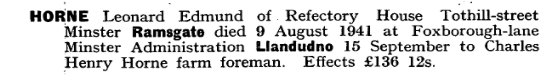

Leonard Edmund Horne 1912 - 1941
[ Home ] | [ Calendar ] | [ Surnames Index ] | [ Census Index ] | [ Family History ]An agricultural laborer and the child of Charles Horne (a market gardener worker) and Amy Spratt, Leonard Horne, the first cousin once-removed on the father's side of Nigel Horne, was born in St Peters, Thanet, Kent, England on Jun 5, 19121,2.
During his life, he was living at Sacketts Hill Farm, St Peters, Thanet, Kent, England on Jun 19, 19211; and on Refectory House, Tothill Street, Minster in Thanet on Sep 29, 19392 and in 1941 (the same place as his father had been living on Sep 29, 1939).
He died on Aug 9, 1941 on Foxborough Lane, Minster in Thanet3,4.
Parents
- Charles Henry was born on Apr 1, 1884
- Amy was born c. May 1879
Citations
- 1921 Census Of England & Wales - Findmypast (was age 9 and the son of the head of the household)
- 1939 Register - Findmypast (was the son of the head of the household)
- England & Wales Government Probate Death Index 1858-2019 - Findmypast
- England & Wales deaths 1837-2007 - Findmypast
Media
Leonard Edmund Horne - probate

Thanet Advertiser 22 Aug 1941

1939 Register Transcription - TNA-R39-1820-1820E-007-15
England & Wales births 1837-2006 - BMD/B/1912/3/AZ/000668/148
England & Wales deaths 1837-2007 - BMD/D/1941/3/AZ/000387/085
1939 Register Transcription - TNA-R39-1820-1820E-007-17
1939 Register Transcription - TNA-R39-1820-1820E-007-16
Family Tree

Generated by ged2site. Last updated on Jun 11, 2024